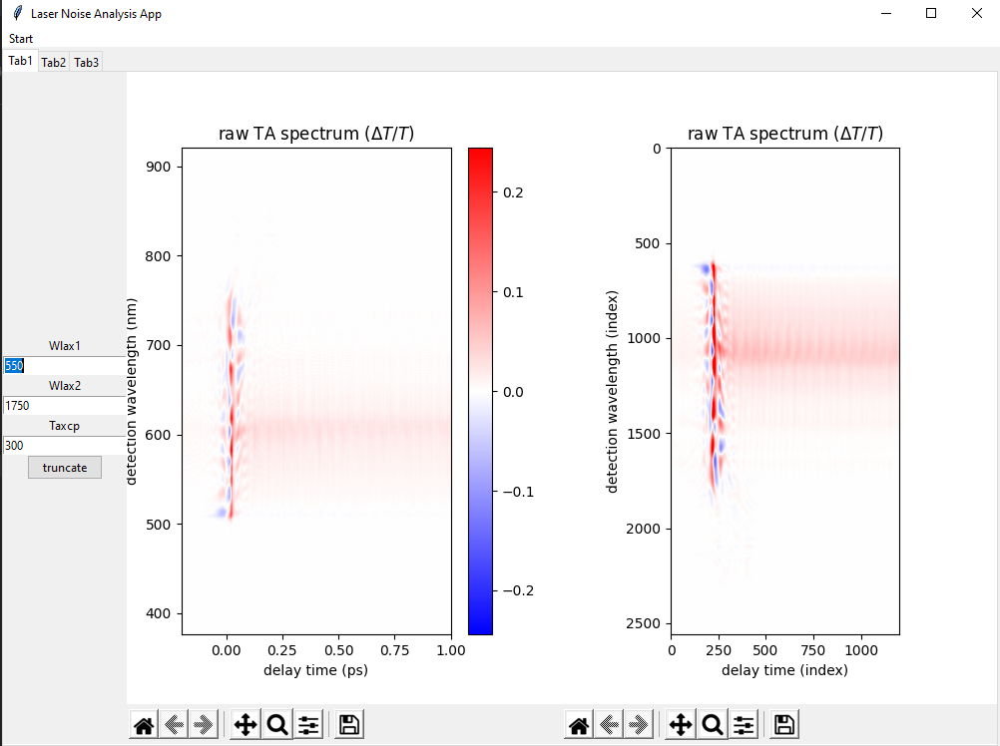

The Laser Noise Analysis App is a program that streamlines the data interpretation process. Raw datasets from laser spectroscopy are large and need to be processed quickly and must be easy for the researcher to make adjustments. The goal is to create a point and click user interface that allows researchers to browse local data files and allow the data pipeline to be automatically run. The resulting graphs are easily saved in a png, jpg or pdf type format for later use. User inputs necessary to properly process the dataset are easy to enter, and resulting graphs can be generated with the click of a button.
When we first set out to design this project our plan was to use the Java language, with wich were all familiar, to design the GUI. At this point the graphing was being handled by matlab. Using a Matlab library we thougt that we would be able to leverage the code that had already been designed to simplify our task. This ended up not working, and instead we elected to use Python as our back end. After a few unsuccessfult attempts to use Java we decided it would be best to do a full conversion to Python. Prior to this project members of our team had no experience with Python, and we all had to put forth some extra effort in learning the language. From this point we began designing the basic frame for our project and slowly integrated the data processing script that had been provided by our sponsor.
